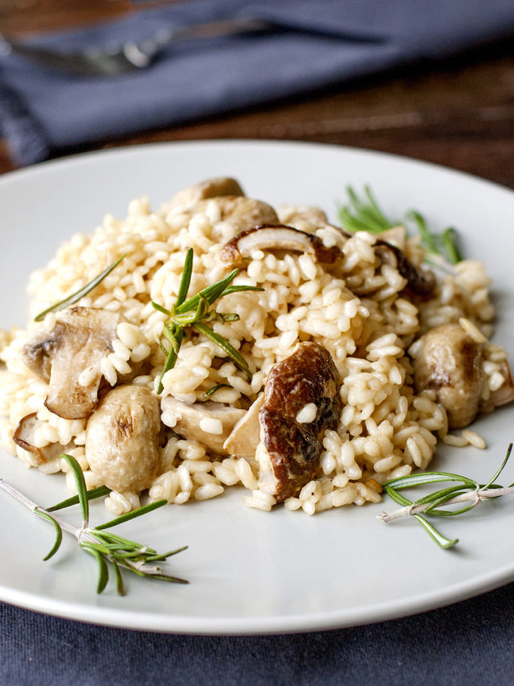

Recipe Details

Ingredients:
- 300g Arborio rice
- 500g mixed mushrooms (porcini, cremini, shiitake), sliced
- 1 onion, finely chopped
- 2 cloves garlic, minced
- 1 liter vegetable or chicken broth, heated
- 120ml dry white wine
- 50g grated Parmigiano-Reggiano cheese
- Fresh parsley, chopped
- Olive oil
- Salt and pepper to taste
Instructions:
- In a pan, heat olive oil and sauté onions until translucent. Add garlic and cook for a minute.
- Add rice and stir until it's well-coated with oil. Pour in wine and cook until it evaporates.
- Add a ladleful of hot broth to the rice and stir frequently. Continue adding broth gradually as it gets absorbed by the rice. Cook for about 18-20 minutes until the rice is al dente.
- In another pan, sauté the mushrooms until golden. Season with salt and pepper.
- Stir in the cooked mushrooms and Parmigiano-Reggiano into the risotto. Adjust seasoning if needed.
- Garnish with fresh parsley before serving.